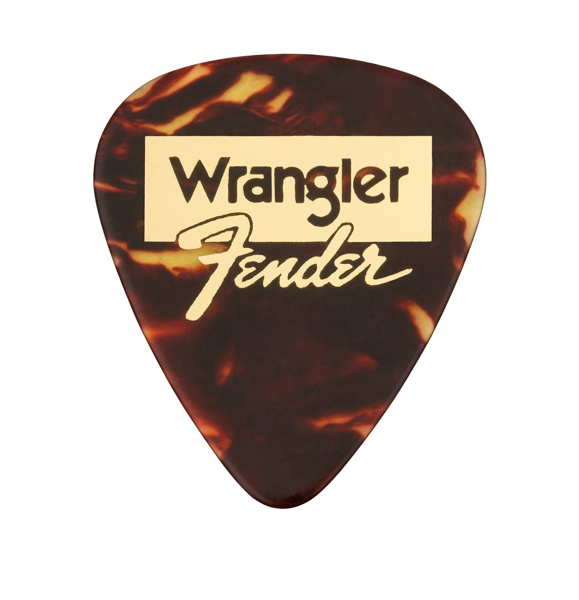
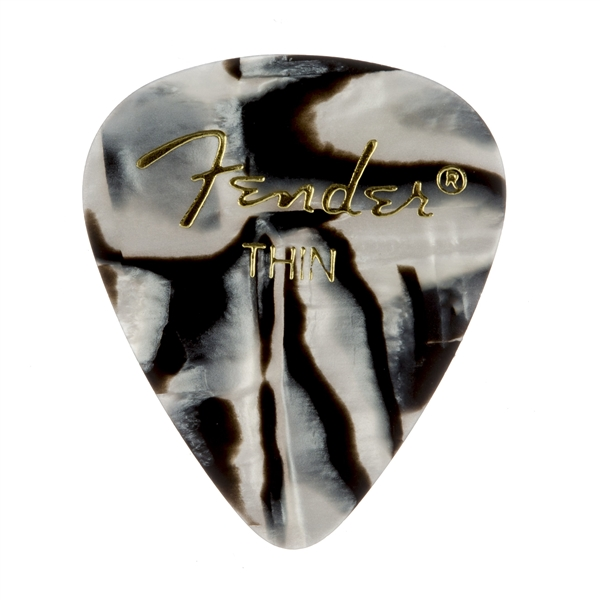
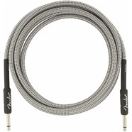

Picks
Juanes 351 Celluloid Picks
Fender® x Wrangler® Celluloid Picks
Graphic Picks, 351 Shape
Straps
Ombré Straps
WeighLess™ Monogram Straps
Monogrammed Straps
Cables
Original Series Instrument Cables
Professional Series Tweed Instrument Cables
Professional Series Instrument Cables